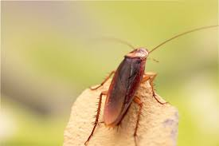
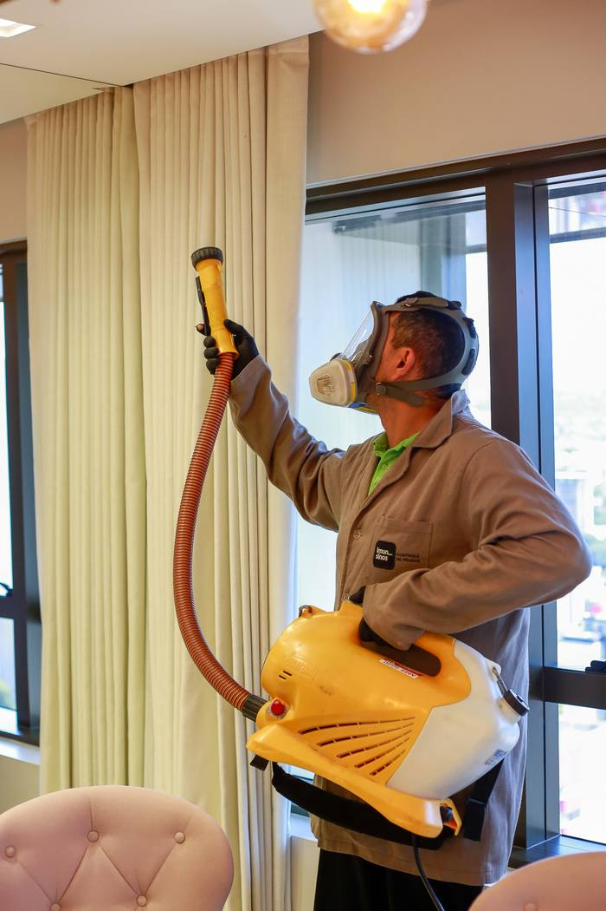
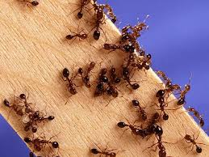
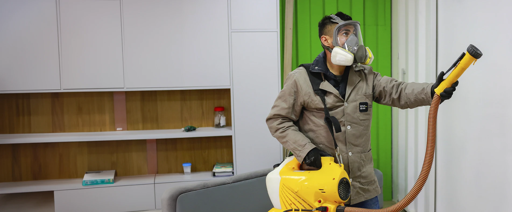

Baratas
Contaminam alimentos. Gel é o método mais indicado para baratinha alemã.
Campo Bom · Vale dos Sinos · Serra Gaúcha
Empresa familiar desde 1986. Escolhemos gel ou líquido conforme o inseto — sem linguagem enrolada e com certificado de execução.

Barata na cozinha, formiga na parede ou aranha no quarto não é “sujeira” — é risco de doença, picada e infestação que cresce rápido. A Imunisinos atende residências e empresas no Vale dos Sinos, Vale do Paranhana, Serra Gaúcha e Região Metropolitana.

Contaminam alimentos. Gel é o método mais indicado para baratinha alemã.

O gel vai até o ninho e atinge a rainha — pulverizar só a trilha não resolve.
Pulverização líquida em rodapés, roda-forros e aberturas. Isolamento de 3 a 6 horas.
Não é o mesmo serviço para todo mundo. O tipo de inseto define a técnica — e o que você precisa fazer em casa.
Sem cheiro, sem isolar a casa, sem limpeza especial. Age pelo consumo: o inseto leva o produto ao ninho.
Pulverização em rodapés, roda-forros, aberturas e paredes. Leva cerca de 40 minutos a 1 hora.

Conta o inseto, a cidade e se é casa ou empresa. Orçamento é personalizado — não tem tabela no site.
Gel, líquido ou seco, conforme a espécie e o ambiente. Técnicos da Imunisinos, não franquia genérica.
Você recebe as orientações de antes e depois (quando o líquido exigir isolamento).
Todo serviço inclui certificado de execução. Se reincidir no prazo, a assistência técnica cobre.

Sócio-gestor · mais de 15 anos na operação.

Sócia-gestora · atendimento e gestão da empresa.
No gel, não. No líquido, o ambiente fica isolado de 3 a 6 horas. Depois, ventile e limpe só o que teve contato, com água e luva.
O orçamento é personalizado: depende do inseto, do tamanho do imóvel e do método. Chame no WhatsApp que a equipe retorna com valor para o seu caso.
Sim. Residências, comércios e indústrias. Para prevenção o ano todo, o programa contínuo é o CIP — esta página é o serviço pontual de insetos.
Líquido: assistência de 90 dias (exceto voadores). Gel: 30 dias. Infestação grande de formiga ou barata pode precisar de nova aplicação para atingir a rainha.
Diz o inseto e a cidade. A equipe da Imunisinos monta o orçamento e agenda a visita.
Quero orçamento no WhatsApp